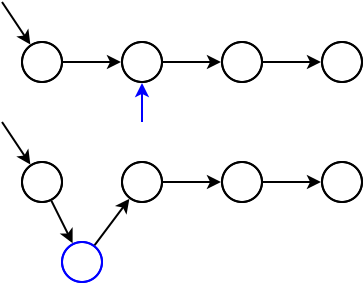

Sequential Containers¶
Characteristics of std::vector<>¶
std::vector<> is an efficient sequential container because …
Organization: contiguous memory ⟶ perfect utilization of processor caches
Appending is performs liek with strings (logarithmic time)
But …
Removal at arbitrary position is slow
Insertion at arbitrary position is slow
⟶ Unwanted copies
std::vector<>: Modification at the Back¶
|
 |
std::vector<>: Insertion¶
Performance is miserable!
|
 |
std::list<>: Insertion and Deletion¶
|
 |